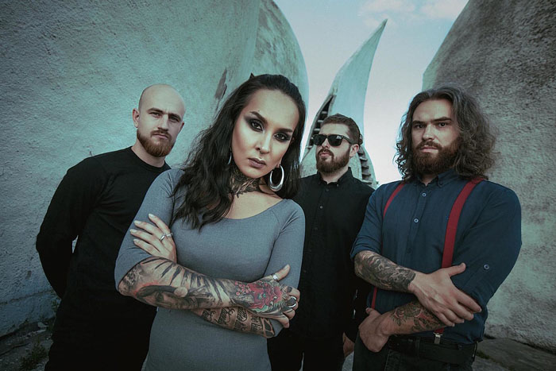
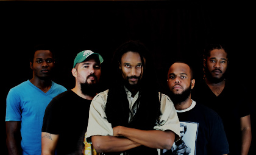
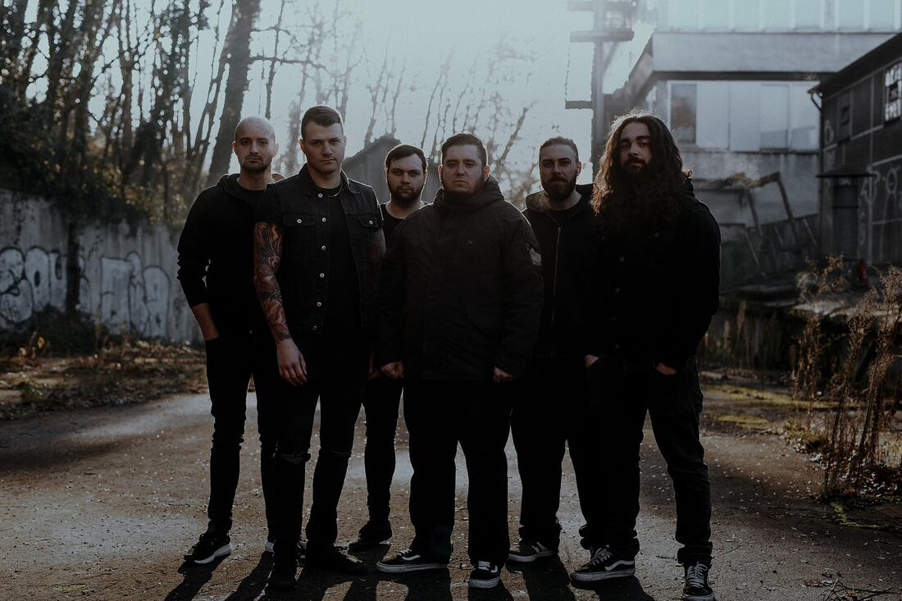
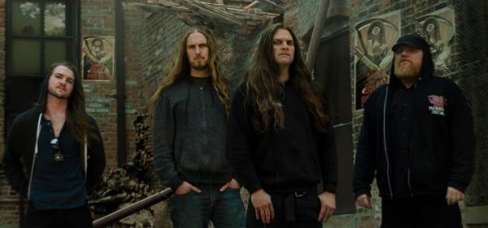
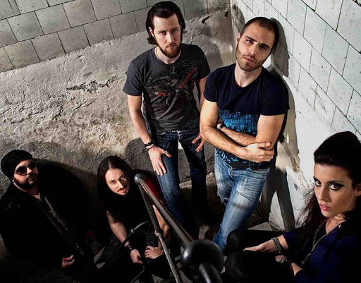

Bandas Desconhecidas: Jinjer:  A banda ucraniana de metalcore formada em 2009. O seu estilo músical incorpora elementos do death metal, rock progressivo e nu-metal. Ao explicar suas influências, a banda tem relacionado seu som ao de outras bandas de metal como Opeth, Karnivool e Textures, além de grupos de outros gêneros como R&B, soul e hip-hop. Um exemplo citado pela banda é o Cypress Hill. Desde a sua criação, a banda já lançou três álbuns e um EP. A banda ganhou destaque em parte por vencer em 2013 e 2016 o Best Ukrainian Metal Act, premiação realizada pelo selo ucraniano InshaMuzyka. Em 2016, a banda também é premiada com o melhor vídeo musical, com a música "I Speak Astronomy". O destaque que a banda recebeu naquele ano favorece o lançamento de seu terceiro álbum, King of Everything pelo selo Napalm Records em julho de 2016. Em 2017, a banda realizou duas turnês na Europa, acompanhando a banda Arch Enemy, bem como sua primeira turnê da América do Norte, ao lado do Cradle of Filth. Logo após anunciar as turnês, em Fevereiro de 2018, a banda confirma a reedição do álbum Cloud Factory (2014) pela Napalm Records. Discografia: Cloud Factory – 2014 King of Everything – 2016 Cloud Factory – 2018 (Remasterizado) Macro – 2019 Membros: Vocalista: Tatiana Shmailyuk Baixista: Eugene Abdiukhanov Guitarrista: Roman Ibramkhalilov Baterista: Vlad Ulasevich Videos: Fonte: Data: 13/03/2021 – Sabado Horário: 16:38:45 Verge of Umbra:  Verge of Umbra é uma banda de New Metal fundada em 2012 na cidade de Belize que funde elementos vocais e instrumentais de hip hop e reggae com rock e heavy metal. Suas influências vão de In Flames, Soilwork, Metallica e Pantera a Bob Marley, Steel Pulse, Cypress Hill e Rage Against The Machine. Videos: Fonte: Data: 13/03/2021 – Sabado Horario: 16:13:29 Necrotted:  Necrotted do sul da Alemanha é um grupo portador de esperança para o Death Metal moderno! Fundada em 2008, a banda de Abtsgmund (Baden-Wuerttemberg) ainda revigora o cenário e convence continuamente sua crescente base de fãs, assim como a imprensa musical. Não apenas os três álbuns completos “Anchors Apart” (2012), “Utopia 2.0” (2014) “Wordwide Warface ”(2017) e o Eps “Kingdom of Hades” (2010) e “Die for Something Worthwile ”(2019) são registrados na história da banda, mas também centenas de concertos ao vivo em diferentes países em que Necrotted já soltou seu pura energia em vários estágios. Videos: Fonte: Data: 13/03/2021 – Sabado Horario: 15:44:21 Jungle Rot:  O Jungle Rot foi fundado em 1992 como um projeto paralelo de Jim Harte e Joe Thomas, membros da banda de thrash metal de Illinois, Prisoner. O nome da banda se refere à podridão da selva, uma infecção da pele que ocorre em climas tropicais. A banda gravou sua primeira demo Rip Off Your Face, uma divertida oferta de death metal imaturo fortemente influenciado por nomes como S.O.D. e Celtic Frost. Então, eles adquiriram o guitarrista Dave Matrise (Num Skull, Nocturnal, Fatal Violence) em 1993. Somente em 1994, quando Matrise assumiu o comando, a banda ficou séria e começou a decolar. A banda refinou seu estilo e lançou sua segunda demo, Skin The Living, em 1995, ano em que Matrise reconhece que a banda começou. Depois de suas duas primeiras demos, a banda assinou com o selo independente americano Pure Death Records, propriedade na época de Jamey Jasta da Hatebreed, onde lançou seu primeiro álbum, uma reembalagem de sua segunda demo Skin the Living, em 1996. Em no final de 1997, seu segundo álbum, Slaughter the Weak, foi lançado pelo selo independente Pulverizer Records. O EP Darkness Foretold foi lançado em 1998 pelo pequeno selo S.O.D. Records, que foi liderada pelo criador da revista de música underground Sounds of Death, e apresentava covers de "Fight Til Death" do Slayer e "Jesus Hitler" do Carnivore. A prensagem inicial de Darkness Foretold veio com uma edição limitada do Jungle Rot Comic Book. Os próximos dois álbuns de estúdio completos, Dead And Buried de 2001 e Fueled By Hate de 2004, foram lançados pela Olympic Recordings em parceria com a Century Media Records. Em 2005, o núcleo atual do Jungle Rot se juntou quando Matrise recrutou os talentos do nativo de Chicago James Genenz (Fleshgrind, Avernus, Dead For Days, Reign Inferno, God Dementia) no baixo e Geoff Bub (Destiss, Putrid Dissentary) na guitarra. Com os deveres de composição agora divididos entre os três membros, e a maior parte das letras sendo imediatamente escrita por Genenz, Matrise agora foi capaz de levar sua banda para o próximo nível. As turnês subsequentes seguiram com bandas como Deicide, Goatwhore, Cattle Decapitation, Krisiun, The Black Dahlia Murder, 25 Ta Life, Hate Eternal, Incantation e Vital Remains. Em meados de 2006, a banda lançou o álbum Warzone on Crash Music. Esta gravação marcou o primeiro álbum a apresentar o agora atual núcleo do Jungle Rot de Matrise, Genenz e Bub. Em 2008, eles foram a atração principal de uma turnê europeia com o apoio de Warmaster, Downswitch e Walking Corpse. A banda assinou com a Napalm Records em janeiro de 2009 e lançou What Horrors Await em junho de 2009. Uma turnê europeia com Six Feet Under seguiu logo em seguida, junto com uma corrida principal pelos Estados Unidos. Em abril de 2011, a banda assinou com a Victory Records e lançou Kill on Command em 21 de junho de 2011. Em 19 de março de 2013, o Jungle Rot lançou seu oitavo álbum pela Victory Records, intitulado Terror Regime. A banda saiu em turnê para divulgar o álbum com grupos de metal, incluindo Suffocation, Obituary, Broken Hope e Decrepit Birth. Em 14 de abril de 2015 foi anunciado que o Jungle Rot tocaria na íntegra do Rockstar Energy Drink Mayhem Festival 2015, se apresentando no palco da Victory Records. No início de 2015, a banda tocou no prestigioso cruzeiro 70000 Tons of Metal e anunciou através de suas redes sociais que estava trabalhando em seu nono álbum de estúdio, Order Shall Prevail, a ser lançado no final do ano pela Victory Records. As encomendas do álbum foram anunciadas em 26 de maio, junto coma lista de faixas do álbum, data de lançamento em 30 de junho e um stream para o single "Paralyzed Prey". Em 27 de maio de 2015 foi revelado que Max Cavalera(Sepultura, Soulfly, Cavalera Conspiracy) estaria emprestando sua voz na faixa "Fight Where You Stand". Em 29 de junho, o videoclipe oficial do single "Paralyzed Prey" estreou no Vevo. Em 7 de março de 2016, o Jungle Rot lançou um vídeo para a faixa "Doomsday" pela Victory Records. A banda também foi anunciada como parte da edição 2016 da Metal Alliance Tour ao lado de Dying Fetus e The Acacia Strain. No verão de 2017, o Jungle Rot completou uma turnê de sucesso pelos EUA e Canadá com a lendária banda alemã de thrash Destruction e o California's Warbringer, se apresentando na América Central, apresentando shows na Nicarágua, Costa Rica, Guatemala e México; e anunciaram que entrariam em estúdio em janeiro de 2018 para gravar seu décimo álbum de estúdio a ser lançado em meados de 2018. Também foi revelado que o ex-baterista Jesse Beahler tocaria bateria neste novo álbum. Discografia: Slaughter the Weak - 1997, Pulverizer Records Dead and Buried - 2001, Olympic/Century Media Fueled by Hate - 2004, Olympic/Century Media Warzone - 2006, Crash Music Inc. What Horrors Await - 2009, Napalm Records - reissued by Victory Records, 2018 Kill on Command - 2011, Victory Records Terror Regime - 2013, Victory Records Order Shall Prevail - 2015, Victory Records Jungle Rot - 2018, Victory Records Rip Off Your Face - 1993 Skin the Living - 1995 4-tracks promo - 1997 Darkness Foretold - 1998, S.O.D. Records/Crash Music Inc. Membros: Guitarrista e Vocalista: Dave Matrise Baixista: James Genenz Guitarrista: Geoff Bub Baterista: Spenser Syphers Videos: Fonte: Data: 13/03/2021 – Sabado Horario: 15:27:06 Ravenscry:  O projeto começou em agosto de 2008, perto de Milão, por um encontro entre Paul Raimondi (Guitarra), Fagio (Baixo) e Simon Carminati (Bateria). Em seguida, Mauro Paganelli (Guitarra) se juntou à banda.Poucos meses depois, Giulia Stefani se junta à banda como vocalista. Em 21 de dezembro de 2009, a banda lançou seu primeiro EP, autointitulado, que está sendo vendido por meio de seu site oficial, iTunes e Amazon. Ele contém cinco faixas: Nobody, Calliope e um terno chamado Redemption. Em 1 de outubro de 2010, Ravenscry assinou com Wormholedeath / Dreamcell11 para publicar seu primeiro álbum chamado "One Way Out", que foi lançado em 15 de abril de 2011. O álbum, The Invisible, foi lançado em 24 de fevereiro de 2017. 100 foi lançado em 15 de maio de 2020, durante a pandemia COVID-19. Discografia: Ravenscry (EP) - 21/12/2009 One Way (LP) – 15/04/2011 The Attraction of Opposites – 27/05/2014 The Invisible -24/02/2017 100 – 15/05/2020 Membros: Vocalista: Giulia Stefani Guitarrista: Paul Raimondi Guitarrista: Mauro Paganelli Baixista: Fagio Baterista: Simon Carminati Videos: Formulario de pesquisa: O que você está achando sobre este site? Ajude-nos a melhorar CLIQUE AQUI Fonte: Data: 13/03/2021 – Sabado Horario: 15:10:28 Criado e Desenvolvido por: Pedro Rammé Figueira